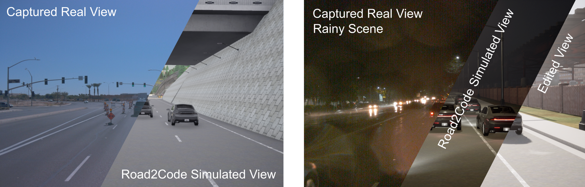
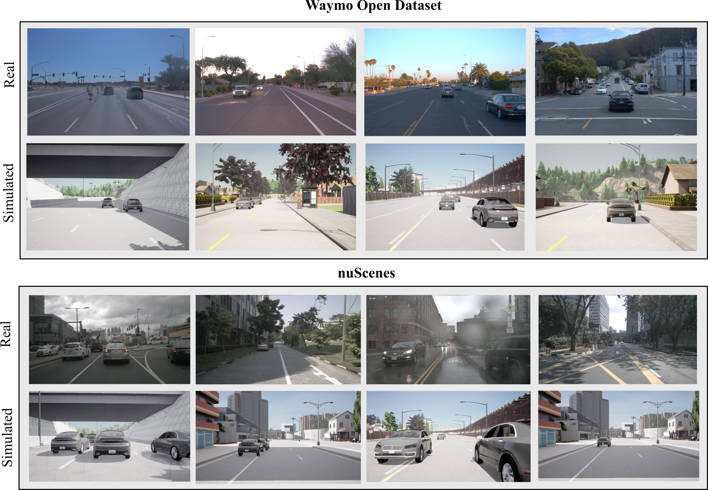
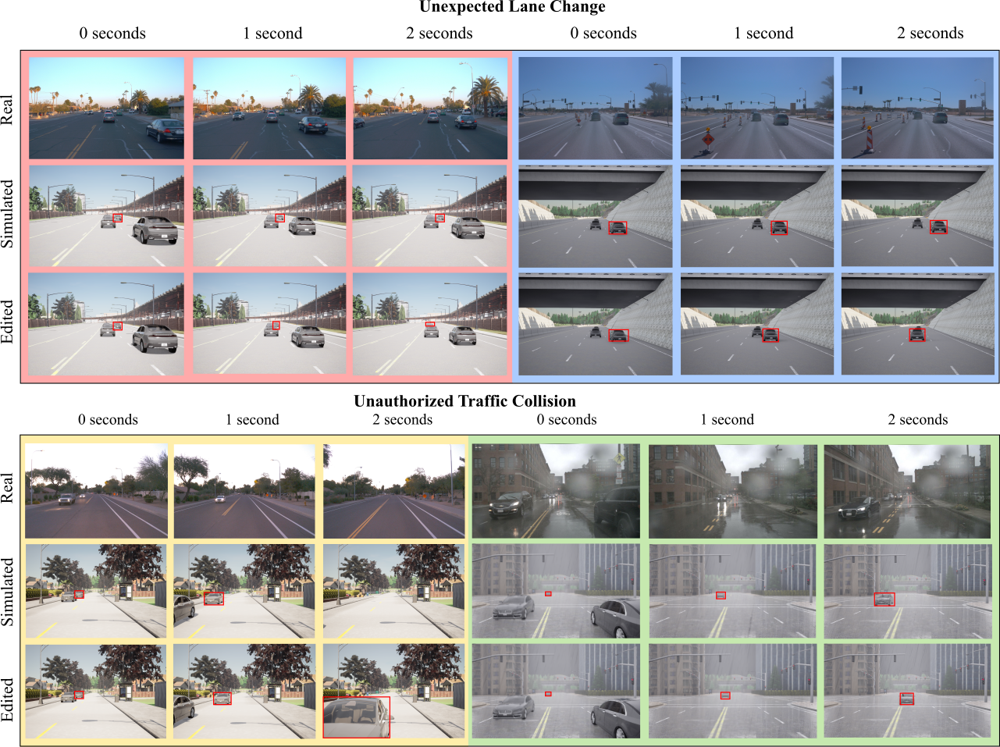
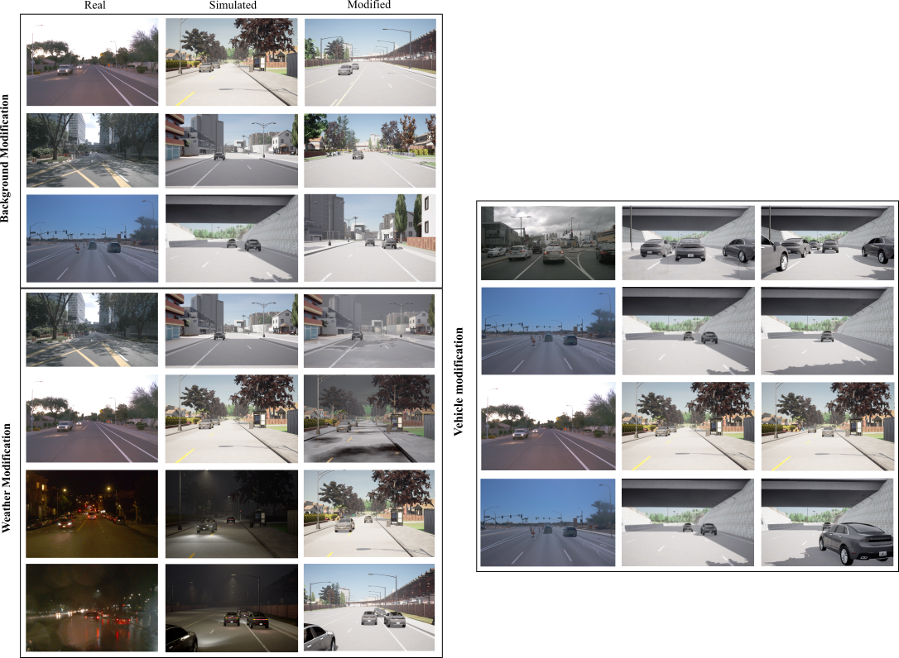
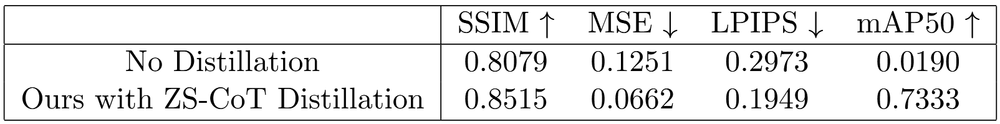
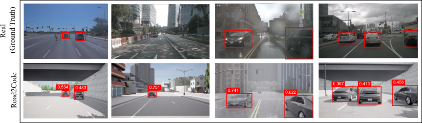

From Road to Code: Neuro-Symbolic Program Synthesis for Autonomous Driving Scene Translation and Analysis
Johnathan Leung, Guansen Tong, Parasara Sridhar Duggirala, Praneeth Chakravarthula
University of North Carolina at Chapel Hill
2nd International Conference on Neuro-symbolic Systems, 2025
Disruptive Idea Award
[Paper]
Abstract
Translating real-world scenarios into simulation environments is essential for the safe, cost effective, and scalable development of autonomous vehicles. Simulations enable rigorous testing of complex, rare, and hazardous scenarios, while also allowing for rapid iteration, data generation, and exposure to diverse conditions. However, the real-to-sim gap remains a significant challenge, as automated methods often fail to accurately capture real-world conditions, and manual scenario generation is labor-intensive and struggles to replicate realistic dynamics and unpredictable human behavior.
In this work, we propose Road2Code, a framework that bridges the gap between real-world traffic data and simulation by leveraging neuro-symbolic program synthesis. Road2Code translates real-world driving scenarios into Scenic programs for the CARLA simulator, utilizing large language models for code generation. To enhance efficiency, we employ a distillation approach, where a large language teacher model generates reasoning processes that refine training for a smaller student model used for inference. Road2Code enhances simulation fidelity by accurately modeling real-world scenarios and agent behaviors while enabling scenario editing and counterfactual analysis, providing essential tools for testing and refining autonomous vehicle behavior. This direct link between real-world data and simulation lays a foundation for advancing trustworthy and transparent autonomous driving research, accelerating progress toward reliable autonomous vehicle systems.
Model Architecture

Road2Code extracts vehicle tracks and translates their motions into Scenic programs. Using Zero-Shot Chain-of-Thought, a teacher model generates reasoning, which is integrated into fine-tuning prompts while training the program synthesizer. At inference time, the generated program P from the video V is deployed in CARLA for evaluation.
Demo Videos
| Real | Synthetic |
Results
We evaluated our model on real-world scenes from the nuScenes and Waymo datasets, with visualizations shown in the figure. The generated scenarios closely match the real scenes, accurately preserving vehicle placements, road layouts, and weather conditions.
The Scenic program generated from Road2Code is highly editable. We showcase unexpected and unauthorized lane changes (top row) and oncoming traffic collisions (bottom). The bottom-right scenario is from nuScenes and others are from Waymo dataset.
We modify Road2Code to generate scenes for a variety of novel unseen scenarios, adjusting environment, weather conditions, and vehicle configurations.
We evaluate visual error of our model with and without Chain-of-Thought distillation. We find that distillation improves SSIM by 5.1% and reduces MSE by 47.1%, lowering errors across all metrics.
Real-world traffic scenes are translated to simulation using Road2Code. The simulated vehicles closely match real-world agents, with high IoU scores, indicating strong alignment between simulated and real bounding boxes.
This website was based on the source code for Fuzzy Metaballs.